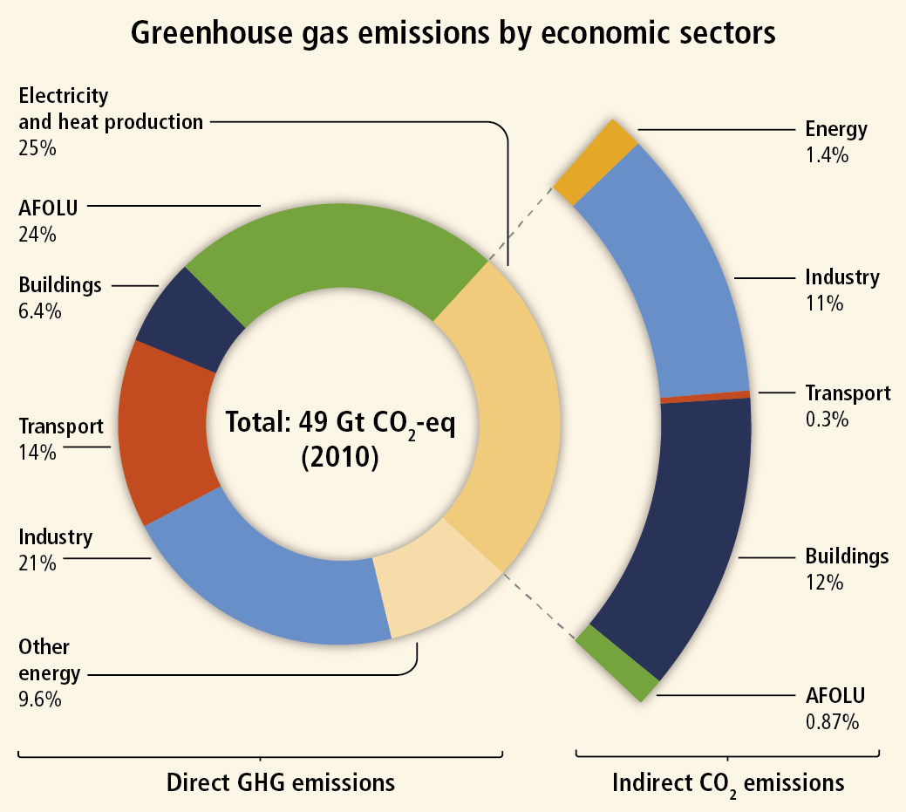

Evidence of changes to the Earth's physical, chemical and biological processes is now evident on every continent. The climate is changing. The earth is warming up, and there is now overwhelming scientific consensus that it is happening, and
human-induced. With global warming on the increase and species and their habitats on the decrease, chances for ecosystems to adapt naturally are diminishing. There are many people who agreed that climate change may be one of the greatest
threats facing the planet. Recent years show increasing temperatures in various regions, and/or increasing extremities in weather patterns. With the world's temperature and climate changing, life on Earth just got more difficult then ever
before.
Effects

The greenhouse effect increases the average temperature of the Earth. If the temperature continues to increase then the balance of life will be disrupted. The food change can also be destroyed, and both species of plants and
animals will die. Plants and animals are not the only things that are affected by the increase of global warming and the climate change. Humans and our environment are also affected by this.
As the Earth's temperature increases, sea levels are rising, glaciers are shrinking, ice is melting worldwide, there are records of high temperatures, severe rainstorms, and droughts are becoming increasingly common. The heat is
not only melting glaciers and sea ice, it’s also shifting precipitation patterns and setting animals on the move. There are a lot of impacts global warming that are happening now.
Changes in temperatures and rainfall patterns alter plant and animal behavior and have a significant impact for humans. If global warming continues to increases, then the humans will have a decrease in our water supply, food
sources, an increase in our economic expensive, and the health of many people will be be in danger. As our climate changes, the risk of injury, illness, and death from the resulting heat waves, wildfires, intense storms, and floods increases.
Since we use water for almost everything we do, our water supply can decrease in both quantity and quality, if the climate is changing. Also, the climate-related threats to global food production include risks to grain, vegetable, and fruit
crops, livestock, and fisheries. If global warming continues, then there are many other impacts that can happen later in life.
Other effects could happen later this century, if warming continues.
Hurricanes and other storms are likely to become stronger.
Ecosystems will change, some species will move farther north or become more successful;
Others won’t be able to move and could become extinct.
Less fresh water will be available
Floods and droughts will become more common
Solutions
There is no real solution to global warming and the climate change. But there many things the human beings can do to reduce the effcects of global warming.
Today we have the technology that we can use to bring down the emissions of these gasesby at least 80 percent.
Global warming is already underway with consequences that must be faced today as well as tomorrow.
Ways to Reduce Global Warming
Boosting energy efficiency
Greening transportation
Revving up renewables
Phasing out fossil fuel electricity
Managing forests and agriculture
Exploring nuclear
Developing and deploying new low-carbon and zero-carbon technologies